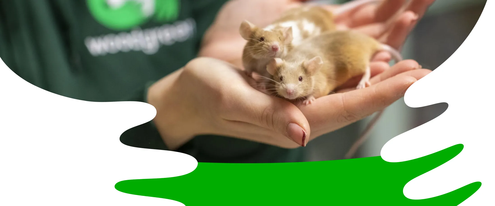
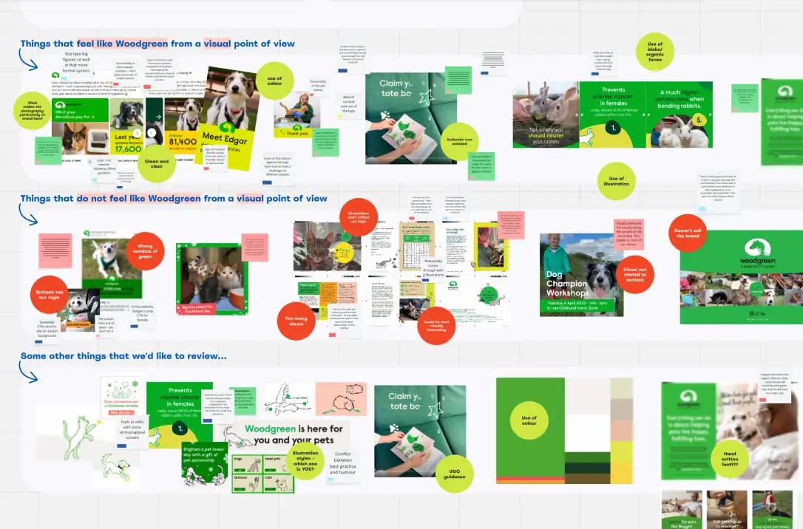
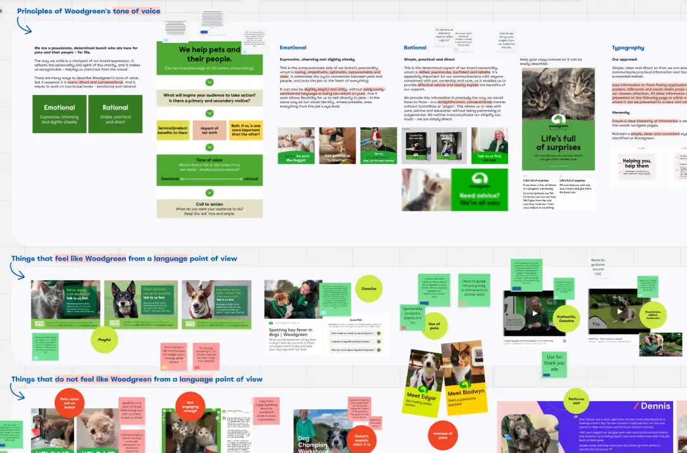
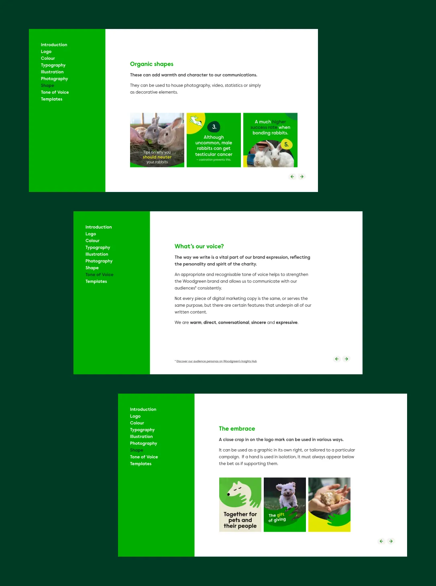
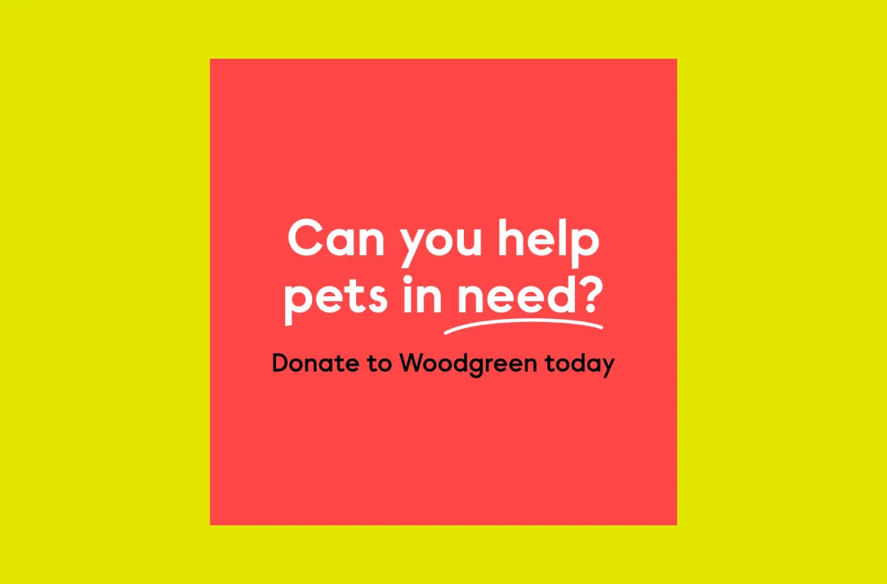
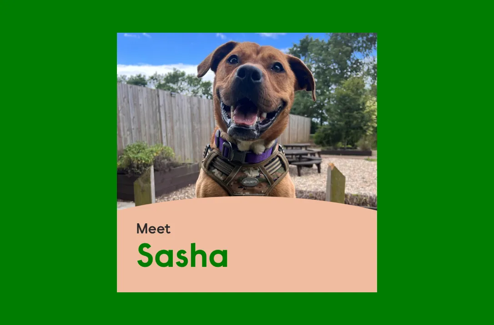

Brand strategy
Digital marketing
The evolution of Woodgreen Pets Charity’s brand toward a coherent and functional style guide for digital marketing, including creative, copy and language guidance and a suite of social media templates to increase engagement and conversion.

Woodgreen had undergone a rebrand in 2022, but had subsequently struggled to portray their fresh new identity through digital marketing channels, with competing organisational priorities and inconsistent application of the visual identity across various strands of the charity.
The client needed help to guide their marketing communications towards a more unified, consistent and coherent output, to better reflect their goals and objectives and the audiences who engage and interact with them.



The project kicked off with a ‘creative reset’ workshop, involving key stakeholders from across Woodgreen, to unpick the digital brand look and feel, language and personality. The aim of this workshop was to re-establish the brand position, and bring the different areas of the charity, from sponsorship to fundraising, in line with the core brand.
This session informed a digital marketing style guide, considering everything from logo positioning and placement to consistent illustrative and photographic styles to the definition of a brand voice for social media. Alongside this, I developed a flexible suite of social media templates for different streams of activity — brand awareness, general fundraising, urgent appeals and pet sponsorship — all geared towards increasing engagement and conversion.


The style guide was very well received by the client, with digital, brand and comms stakeholders all appreciating its clarity and comprehensive nature. The templates have been used consistently across Woodgreen’s social media channels, and have made posting quicker and more efficient, with no need to create bespoke social media graphics for the majority of ads and posts outside of specific campaigns.